Gurmat Vidyala · Classes
ਗੁਰਮਤਿ ਵਿਦਿਆਲਾCome and learn with us.
Gurmat classes at gurdwaras in Leicester. Every one is free, and every teacher is a volunteer.
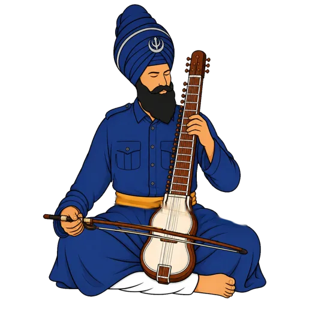
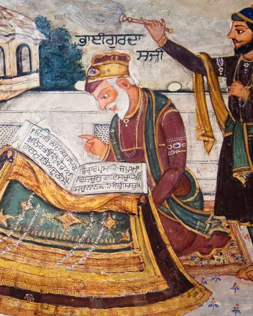
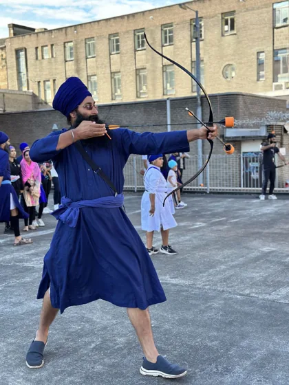

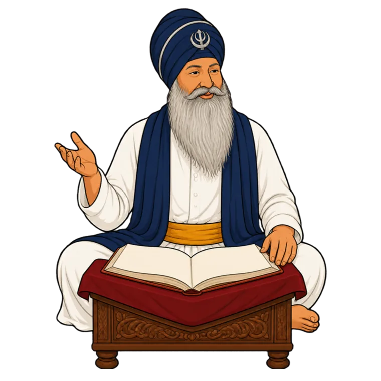
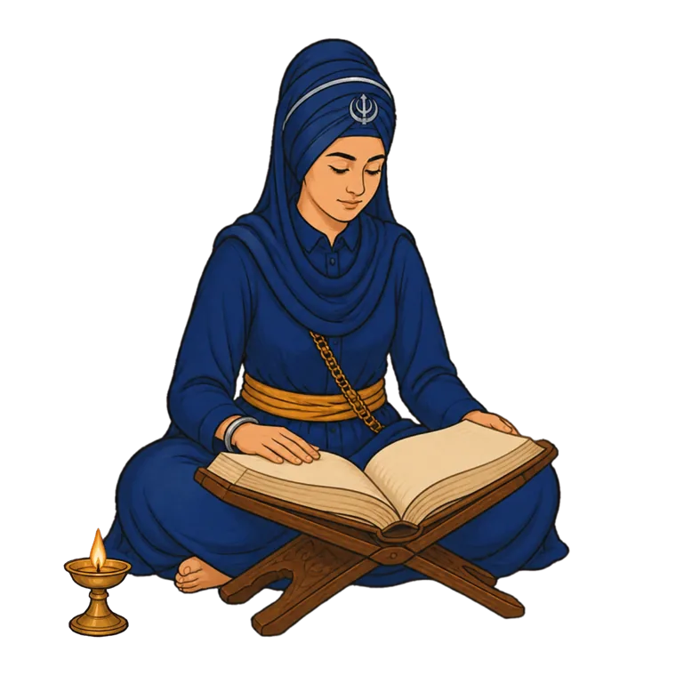
How it works
Almost every class is open to all ages. There is no registration and no audition, and you take part from your first session.
The vidyale
The six classes.
Each class has its own page. Message us on WhatsApp for this week's times.
Kirtan Vidyalaਕੀਰਤਨ ਵਿਦਿਆਲਾ
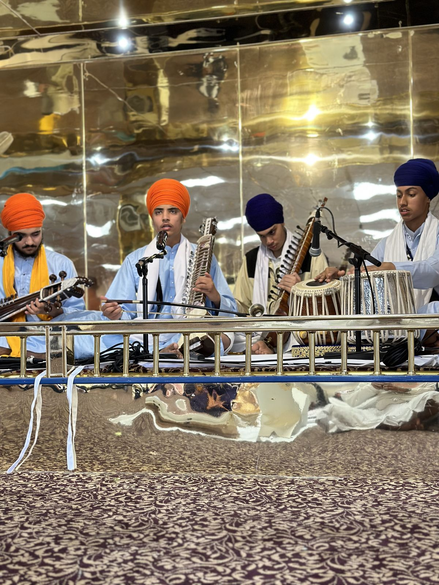
Open now 02Archery Akharaਤੀਰ ਅੰਦਾਜ਼ੀ
Open now 03Santhiya Vidyalaਸੰਥਿਆ ਵਿਦਿਆਲਾ
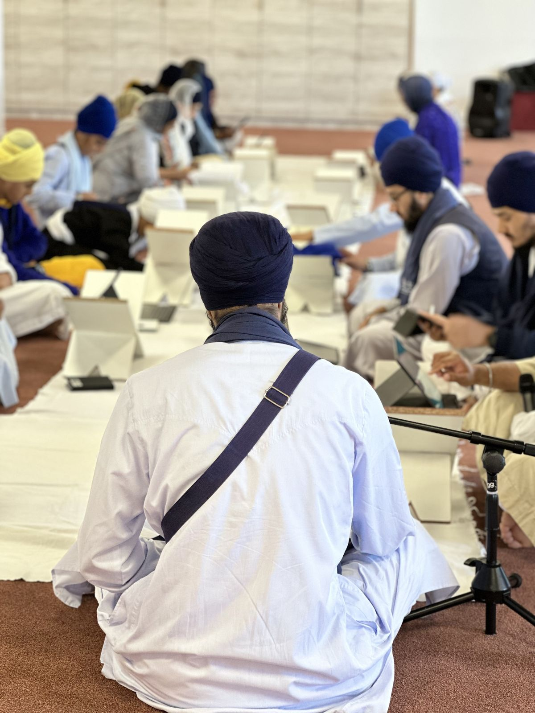
Open now 04Tabla & Joriਤਬਲਾ ਤੇ ਜੋੜੀ
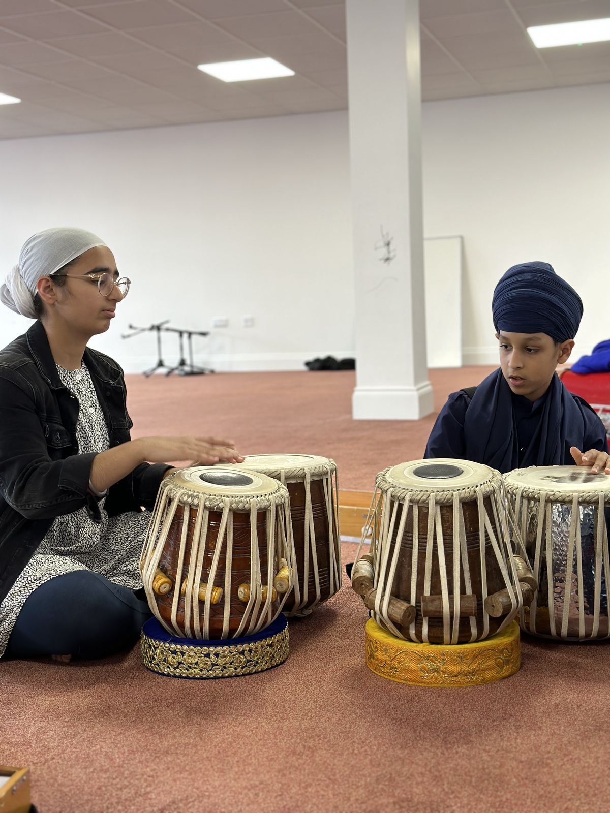
Open now 05Katha Vidyalaਕਥਾ ਵਿਦਿਆਲਾ
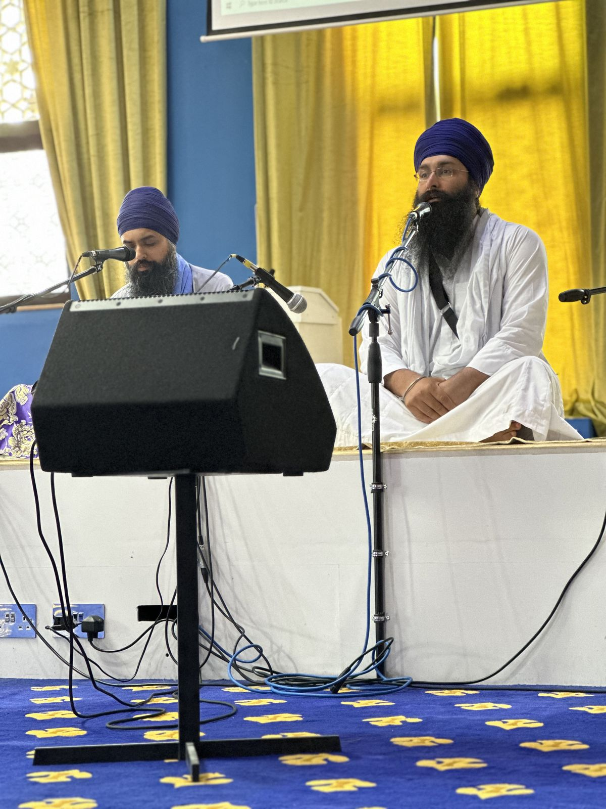
Open now 06Itihaas Vidyalaਇਤਿਹਾਸ ਵਿਦਿਆਲਾ
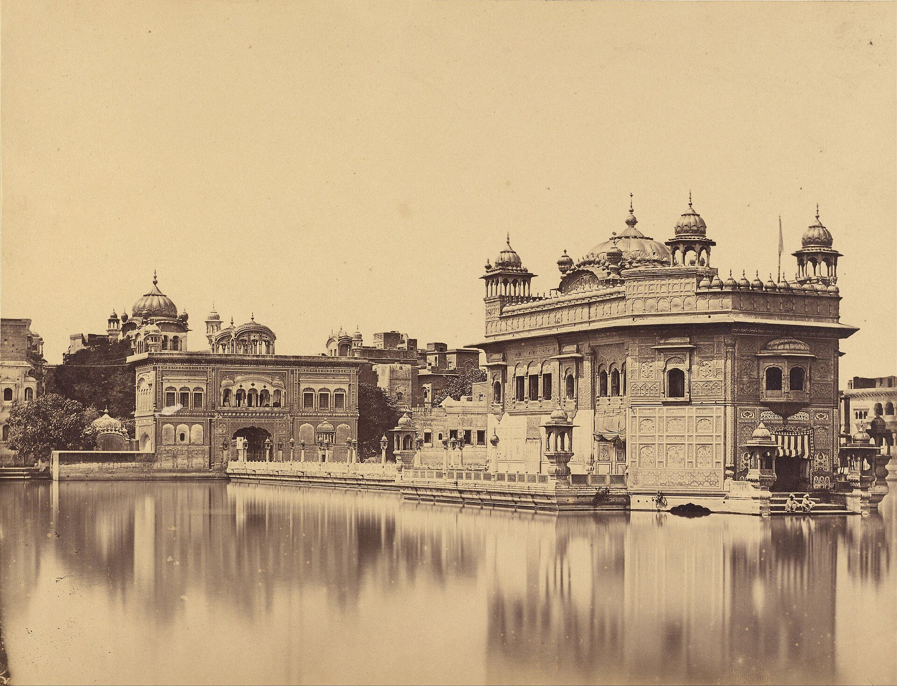
Open nowHow to start
Your first week.
There is no form to fill in and no waiting list.
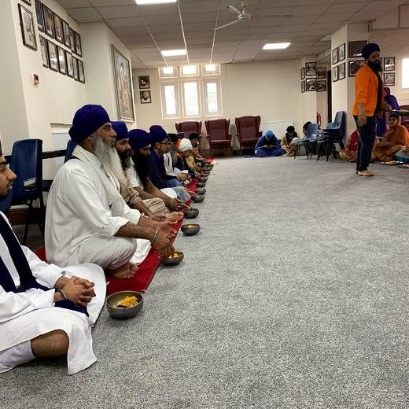
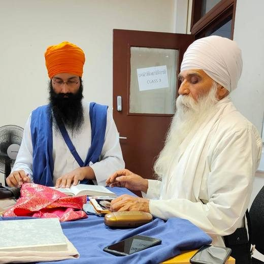
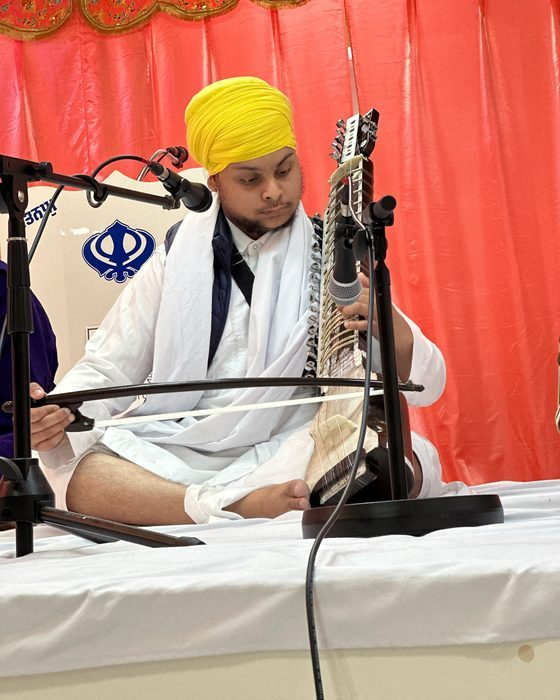
Send us a message.
Tell us which class you'd like, or that you're not sure yet. One of the teachers will reply with this week's times.
Come along.
Arrive a few minutes early and cover your head. If you don't have an instrument, we'll lend you one, and granths are shared.
Keep coming.
You learn at your own pace, from people who learnt the same way.
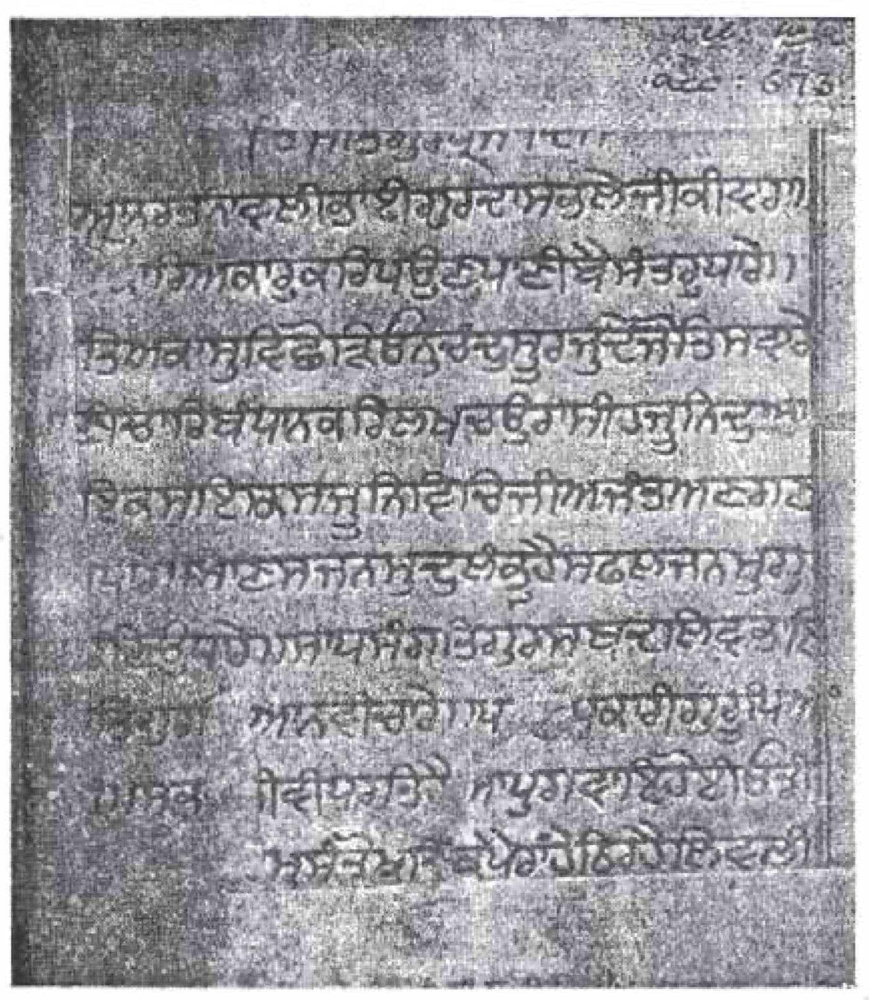
Ask us
Not sure where to start?
Santhiya is where every other class begins, because they all rest on reading Gurbani well. Send us a message and we'll help you choose.
Message us on WhatsApp